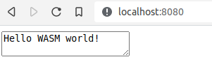

This example, walks through how to compile a hello world executable written in C++ to WebAssembly and how execute it with standalone WebAssembly runtimes, the Node.js JavaScript runtime, and web browser runtimes!
Before getting started, make sure Node.js and Docker are installed. On Linux, make sure you can run docker without sudo. On Windows, make sure Shared Drives are enabled in the Docker settings. On Windows, also install Git Bash, and run shell commands in Git Bash.
First, let’s create a new directory to house our project.
mkdir itk-wasm-hello-world |
Let’s write some code! Populate hello.cxx with our Hello World program:
|
Next, provide a CMake build configuration at CMakeLists.txt:
cmake_minimum_required(VERSION 3.16) |
We use the add_executable command to build executables with itk-wasm. The Emscripten and WASI toolchains along with itk-wasm build and execution configurations are contained in the itk-wasm dockcross Docker images used by the itk-wasm command line interface (CLI). Note that the same code can also be built and tested with native operating system toolchains. This is useful for development and debugging.
Build the program with the itk-wasm CLI, itk-wasm. This is shipped with the itk-wasm Node.js package. First install itk-wasm with the Node Package Manager, npm, the CLI that ships with Node.js.
npm install --global itk-wasm |
WASI
Build the project with the WASI itkwasm/wasi toolchain in the ./wasi-build/ directory:
itk-wasm -i itkwasm/wasi -b ./wasi-build/ build |
A hello.wasi.wasm WebAssembly binary is built in the ./wasi-build/ directory.
❯ ls wasi-build |
Execute the binary with the run itk-wasm subcommand.
❯ itk-wasm -b ./wasi-build/ run hello.wasi.wasm |
Congratulations! You just executed a C++ program compiled to WebAssembly. 🎉
The binary can also be executed with any of the available WASI runtimes.
Node.js
For Node.js or the Browser, build the project with the default Emscripten toolchain. The project is built in the ./web-build directory by default.
itk-wasm build |
To execute the project, create an index.mjs JavaScript file to invoke the module:
import path from 'path' |
And run it!
❯ npx node ./index.mjs |
Congratulations! You just executed a C++ program in JavaScript. 🎉
Browser
The same Emscripten WebAssembly module can be executed in a web browser.
Create an HTML file that will call the WebAssembly module through JavaScript and display
its output in the HTML DOM:
|
Serve the with an http server:
npm install --global http-server |
And point your browser to http://127.0.0.1:8080/.

Congratulations! You just executed a C++ program in your web browser. 🎉